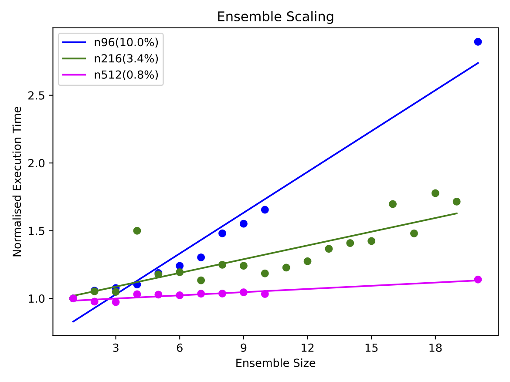
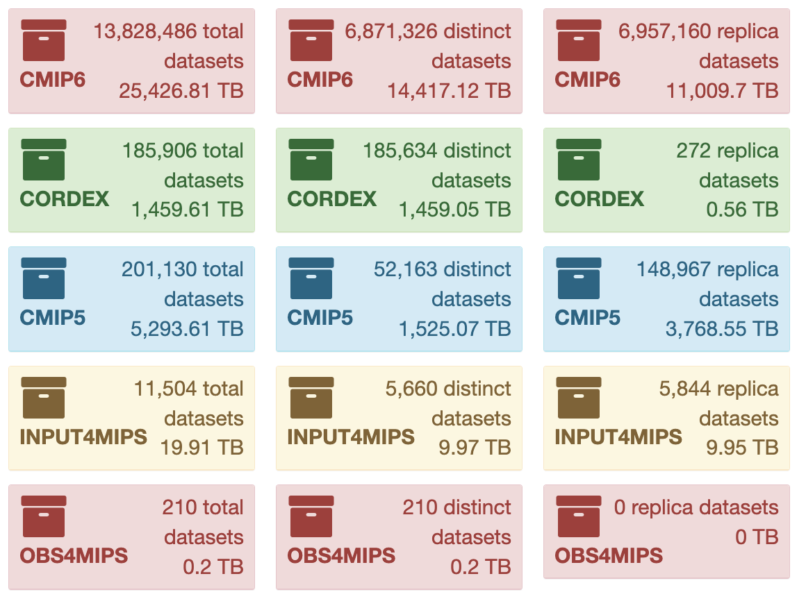
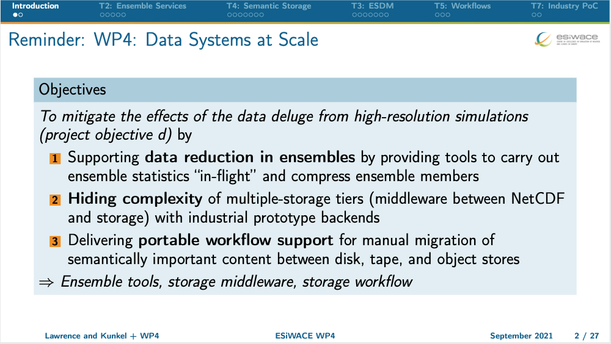
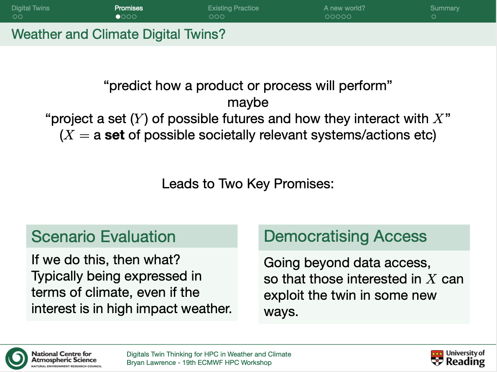
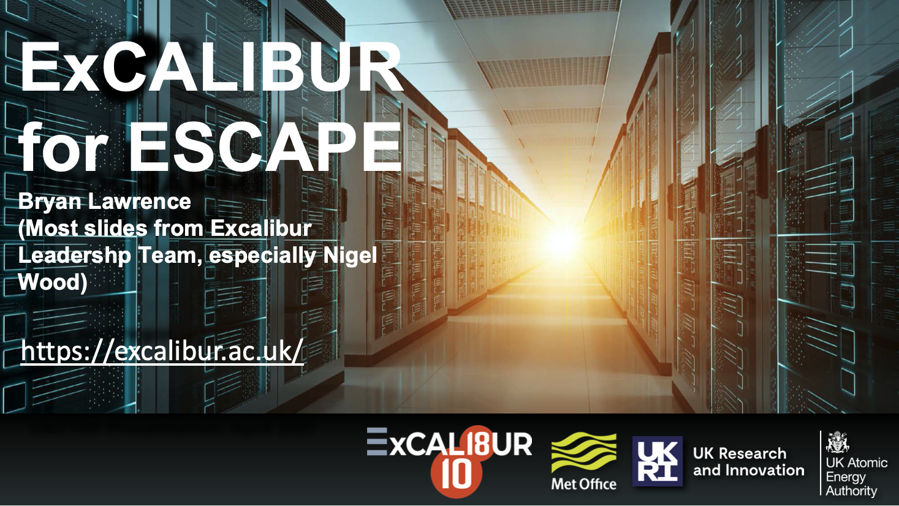
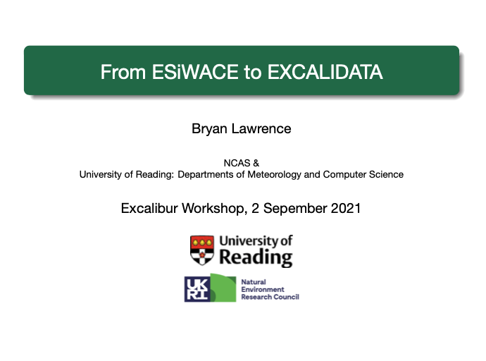

Welcome
This is my blog and website. You can find out more about it and me here. My main research interests are climate science and the necessary underpinning software engineering, data science, computer science, and compute and storage architectures. Keep up to date using my feed.
Blog articles and Talks
My last few blog items and talks are listed below. A complete list of blog articles is here with a complete list of talks here.
-
Article: Dual Tariffs for EVs Don't Play Nicely with Heatpumps - 18 Jun, 2023

So we have an EV (a “2021 Vauxhall corsa e”, since you asked). We had to get one in a hurry as our 2008 Seat Ibiza ecomotive died very suddenly and unexpectedly. We had always planned to replace with an EV, but imagined that would be in a year or two. As we live in place with no public transport, and my wife and I both have o(20) mile commutes (in diffiferent directions), we had to buy a replacement in a hurry - without doing much due diligence, either around car or charging options. ... more
-
Meeting: UKNCSP Strategic Workshop on High Resolution Climate Modelling, Met Office, Exeter, June 16, 2023
 This was an inaugural meeting of the UK high resolution climate modelling community under the auspices of the new UK National Climate Science Partnership. ... more Talk: Data Challenges for UK (global) k-scale modelling
-
Meeting: Baljifest, GFDL, Princeton, via Zoom, May 15, 2023
Baljifest was a celebration of the contributions of Balaji to climate modelling at GFDL and Princeton. There was a day of presentations, followed by a panel on the future of climate modelling. Saravanan and I kicked off the panel with a presentation each. ... more Talk: Perspectives on the Future of Climate Modelling
-
Meeting: UK Turbulence Consortium, 2023 Annual Meeting, Imperial College, London, March 26, 2023
 An invited talk to the UK turbulence consortium which aimed to describe some of the activities the climate science commmunity has undertaken, and is undertaking, to deal with the data deluge. ... more Talk: Generic lessons from data management in support of climate simulation workflows
-
Article: Two new preprints - 05 Oct, 2021
I’ve just added links to two preprints to my publications page. Quite different topics. (There are also a lot of recent talks online as well, I’ve had a busy month!) ... more
-
Meeting: ESiWACE2 2021 General Assembly, Gotomeeting, September 27, 2021
 An update on progress in the ESiWACE2 fourth work package, WP4, data (systems) at scale. ... more Talk: WP4 Data at Scale
-
Meeting: 19th Workshop on high performance computing in meteorology, Zoom, September 20, 2021
 Presentation: pdf (0.3MB) ... more Talk: Digital Twin Thinking for HPC in Weather and Climate
-
Meeting: ESCAPE-2 Final Dissemination Workshop, Zoom, September 03, 2021
 ExCALIBUR for ESCAPE ... more Talk: ExCALIBUR for ESCAPE
-
Meeting: Benchmarking for ExCALIBUR Update, Zoom, September 02, 2021
 From ESiWACE to ExCALIData ... more Talk: From ESiWACE to ExCALIDATA
Talk: An Introduction to ExCALIDATA
-
Article: Under the hood of a Digital Twin ESM - 16 Jun, 2021
In which we peer under the hood of the idea that ephemeral data produced by a digital twin can be used by collaborators who co-designed the digital twin experiment. ... more